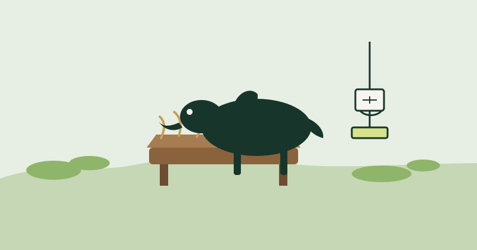

Jayawardhana H.A.S.
IT22136138Automated feeding and nutrition. Cameras watch type, size, and health. A manual weight measurement, with breed and condition, sets the feed the system recommends and can dispense.
About us
We are undergraduates in the Faculty of Computing at SLIIT, project R26-IT-093, Converting a traditional farm into an AI/ML-powered automated smart farm. The group is Jayawardhana H.A.S., Illangasinhe I.M.A.D., Shamika G.L., and Arachchi W.A.A.I.W.
Automated feeding and nutrition. Cameras watch type, size, and health. A manual weight measurement, with breed and condition, sets the feed the system recommends and can dispense.
Disease detection and emergency alerts. Cameras and sensors look for abnormal behaviour or symptoms, then recommend a first action or notify a veterinarian.
Animal birth and egg hatch prediction. Image, sensor, and historical records estimate whether a calf or an egg is likely to come through healthy.
Customized live market prediction. The component keeps a selling and buying picture and uses AI to forecast prices and recommend when to buy or sell.
Illangasinhe I.M.A.D. · IT22282118
Cameras and sensors score behaviour and visible symptoms. The system recommends a first action or alerts a veterinarian.

Jayawardhana H.A.S. · IT22136138
Manual weight measurement, camera checks of type and size, and a health-aware ration the system can dispense.
Shamika G.L. · IT22139894
Image, sensor, and historical records estimate a healthy calf birth or a successful hatch.
Arachchi W.A.A.I.W. · IT22134608
An up-to-date selling and buying record, with an AI price forecast and a buy or sell recommendation.
Names and registration numbers follow the topic assessment form for R26-IT-093. Farm records are about 3,450–3,500 rows from National Livestock Development Board farms. Photographs and university email addresses are added with the final submission.